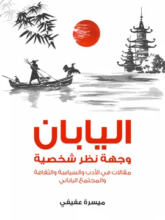

اليابان وجهة نظر شخصية: مقالات في الأدب والسياسة والثقافة والمجتمع الياباني

قراءة عربية أصلية محددة النطاق في الصفحات 9 إلى 11 من ملف PDF المرتبط، وليست تلخيصا كاملا للكتاب. نناقش ما تدعمه هذه المقاطع فقط.
سنوات في بلاد الشمس
يفتتح عفيفي كتابه بسؤال أرّقه بعد أن عاد صديقه الذي كان ينوي الهجرة الدائمة قبل أوانه، عازيًا السبب إلى عجزه عن تحمّل عنصرية اليابانيين، بينما لم يشعر الكاتب نفسه يومًا بعنصرية تُعامله بها على هذا النحو. يستعيد سنواته الأولى: دراسة اللغة في المعهد، والعمل بعدها في محل «كونبيني» يعمل على مدار الساعة، ودراجته العادية التي تقوده من البيت إلى المعهد إلى العمل حتى الثانية صباحًا، ومواقف الشرطة المتكررة التي كانت تستوقفه للتأكد من أن الدراجة ملكه في زمن انتشرت فيه سرقات الدراجات، وكيف كان تفهّمه لموقف الطرف الآخر وهدوؤه يحوّلان المعاملة من اتهام وتربّص إلى تعاطف، ليقدّم تجربته بوصفها وجهة نظر شخصية لا حكمًا نهائيًا على مجتمع بأكمله.
زاوية وحدود القراءة
قراءة موجزة من ص ٩ إلى ص ١١ من أصل ١٨٦ صفحة، تعرض مطلع المقال الأول، لا المقالات كاملة.
الطبعة والقراءة
هذه النسخة من الكتاب صادرة ومتاحة مجانًا بموجب اتفاق قانوني بين مؤسسة هنداوي والسيد الأستاذ ميسرة عفيفي.
تنزيل PDF المجاني ↓ القراءة والمصدر الرسمي ↗